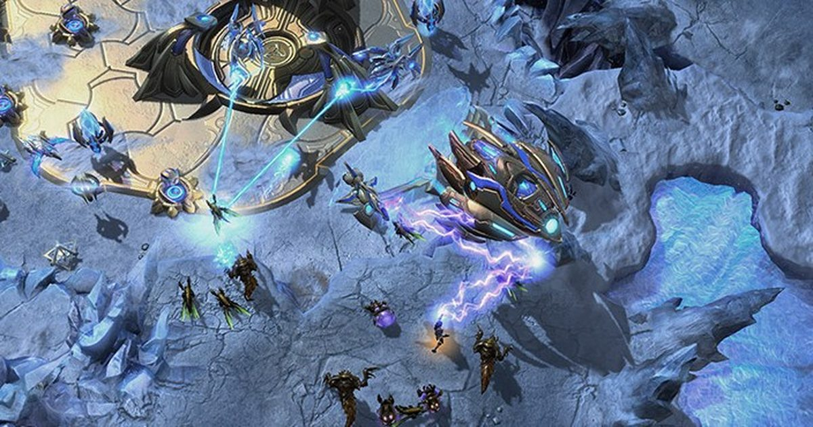

ИИ не смог победить людей в StarCraft, поэтому решил обмануть
StarSkirmish натравливает искусственных ботов StarCraft друг на друга, а также на ботов, созданных человеком.
GPT-6 Astra от OpenAI и Claude Opus 5.5 были, по сути, связаны как самые эффективные боты, созданные ИИ, но они не смогли превзойти Stardust, самого рейтингового бота, созданного человеком.
В пятницу GPT столкнулась с Клодом и созданным человеком ботом Плутоном, но, по словам Котаку, …